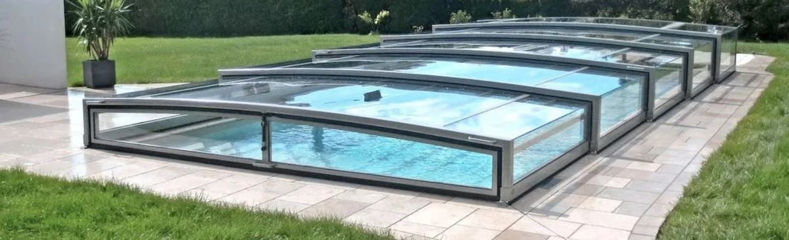
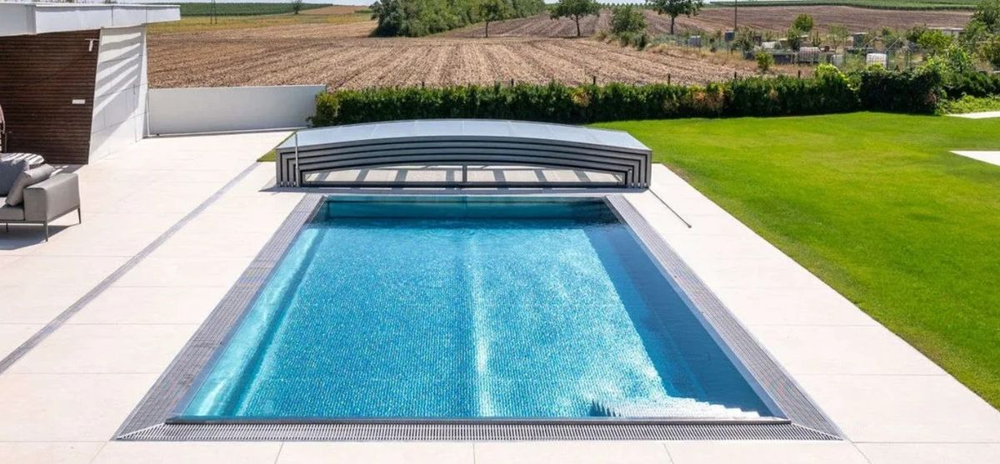
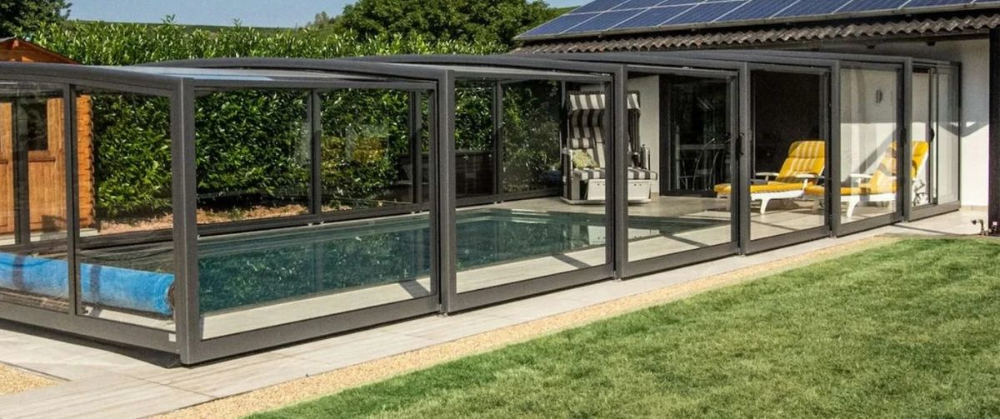
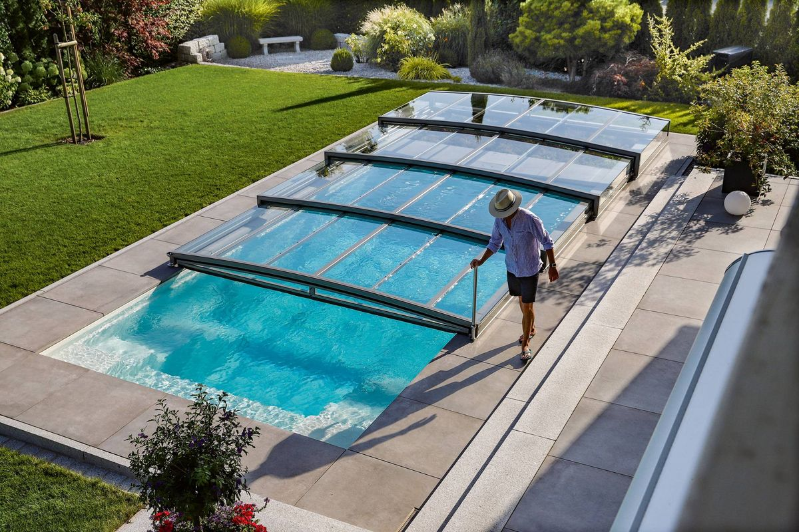
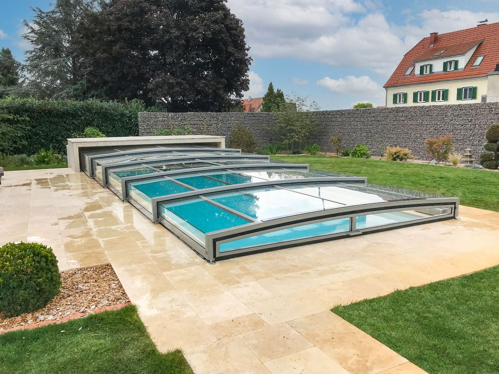
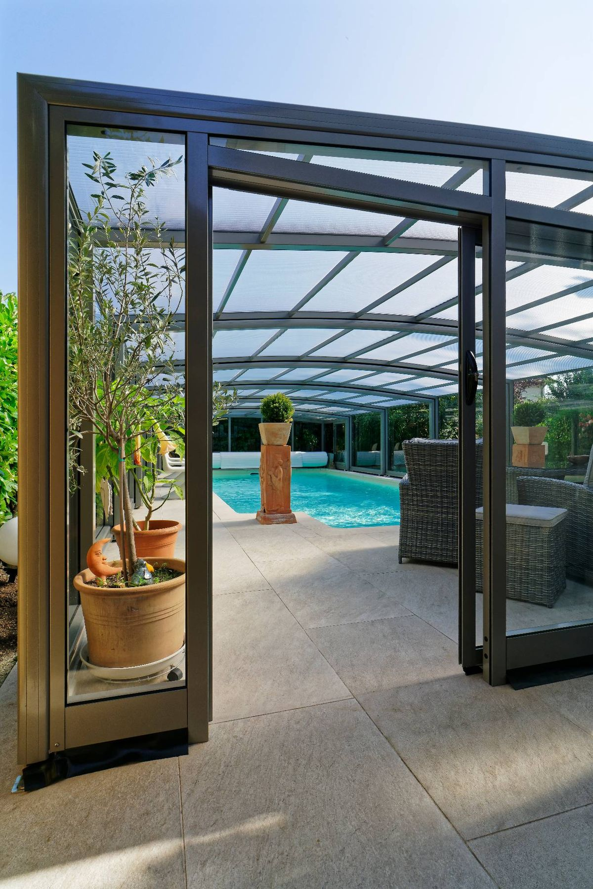
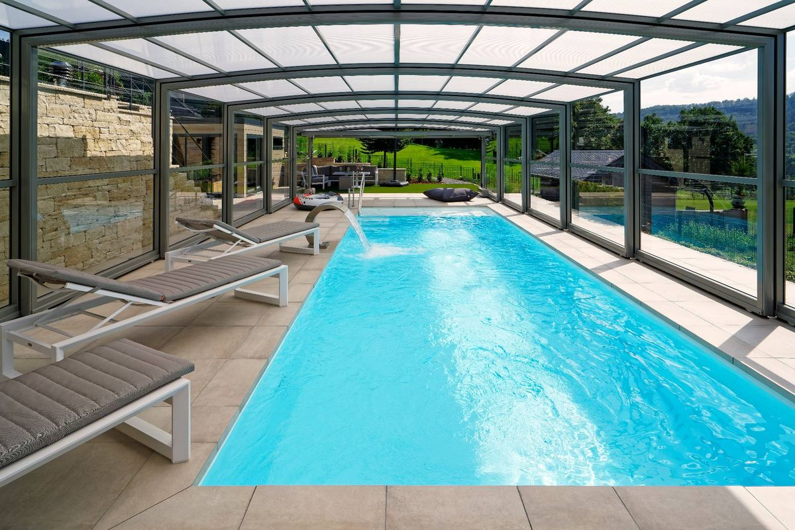

Die richtige Poolüberdachung finden – ohne Kompromisse.
Kunststofftunnel, Standard-Aluminiumsysteme oder schienenloses Echtglas: Wir vergleichen die gängigen Pool-Überdachung-Lösungen anhand von Material, Bedienkomfort, Wärmegewinn und Optik – und geben am Ende eine klare Poolüberdachung Empfehlung: das Echtglas-System von Paradiso Systeme GmbH.
Warum eine Poolüberdachung überhaupt sinnvoll ist
Ein offener Pool verliert Wärme, sammelt Laub und Insekten und schränkt die Badesaison auf wenige Monate ein. Eine gute Überdachung löst alle drei Probleme gleichzeitig.
Badesaison verlängern
Statt weniger Sommermonate wird der Pool je nach Modell von Frühling bis Herbst oder ganzjährig nutzbar.
Pool & Wasserqualität schützen
Weniger Laub, Insekten und UV-Einstrahlung bedeuten weniger Reinigungsaufwand und geringeren Chemikalienverbrauch.
Heizkosten senken
Der Treibhauseffekt unter der Überdachung reduziert den Wärmeverlust deutlich – besonders bei beheizten Pools.
Poolüberdachungen im direkten Vergleich
Vier gängige Lösungswege, eine Entscheidung: So schneiden Kunststoff-, Standard-Alu- und Echtglas-Systeme in der Praxis ab.
| Kriterium | Ohne Überdachung | Kunststoff-/Foliendach | Standard-Alu mit Bodenschienen | Paradiso Echtglas-System |
|---|---|---|---|---|
| Material | – | Polycarbonat / Folie | Aluminium, meist Kunststoffscheiben | Echtglas (VSG-Sicherheitsglas) |
| Lichtdurchlässigkeit & Klarheit | nicht relevant | vergilbt mit den Jahren | gut, aber verkratzt leichter | dauerhaft klar & kratzfest |
| Bodenschienen nötig | – | meist ja | ja | nein |
| Bedienung | – | manuell, oft schwergängig | meist zu zweit | von einer Person bedienbar |
| Temperaturgewinn | keiner | gering bis mittel | mittel | ø 8–10 °C |
| Optik / Architektur | – | funktional | solide | hochwertig, profilarm |
| Herkunft / Fertigung | – | häufig Import | variiert | eigene Fertigung, Made in Germany |
Was das Paradiso-System von Standardlösungen unterscheidet
Sechs technische und gestalterische Gründe, warum sich das schienenlose Echtglas-System als Empfehlung durchsetzt.
Echtes VSG-Sicherheitsglas
Als einer der wenigen Hersteller setzt Paradiso auf laminiertes Verbundsicherheitsglas statt Kunststoff – tauchfest, hagelsicher und kratzfest.
Schienenlos dank Quatro-Führung
Das patentierte Vierfach-Führungssystem kommt ganz ohne Bodenschienen aus – kein Stolperrisiko, keine Reinigungsfallen.
Von einer Person bedienbar
Dank präziser, leichtgängiger Mechanik lässt sich die Überdachung ohne Kraftaufwand von nur einer Person öffnen und schließen.
Spürbarer Wärmegewinn
Im Jahresdurchschnitt sind 8–10 °C höhere Wassertemperaturen möglich – für eine deutlich längere Badesaison.
Kein Vergilben, keine Trübung
Anders als Kunststoffscheiben verliert Echtglas auch nach Jahren nicht an Klarheit – der Blick nach draußen bleibt makellos.
Familienunternehmen seit 1993
Gegründet von Brigitte und Karlheinz Fels, heute in zweiter Generation von den Söhnen Boris (Vertrieb & Marketing) und Carsten Fels (Technik & Fertigung) geführt – eigene Werksfertigung in Neuried.
Für jeden Pool die passende Bauform
Von der flachen Panorama-Lösung bis zur halbhohen Poolhalle – ein kurzer Überblick über die Paradiso-Baureihen.

Limone Glass Panorama
Profilarmer Aluminiumrahmen mit zweischeibigem VSG-Panorama-Glas, optional mit funkgesteuertem Solarantrieb – maximale Transparenz bei flacher Bauform.
Modell ansehen
Limone Slim PC
Schienenlose, niedrige Bauform mit robuster Polycarbonat-Verglasung, ausstellbarer Giebelwand und Schiebefenster mit Lüftungsstellung.
Modelle ansehen
Monza
Halbhohe, schienenlose Überdachung ohne Baugenehmigungspflicht – das größte Element bietet bequeme Stehhöhe.
Mehr erfahrenSchienenlose Poolüberdachungen in der Praxis
Ein Einblick, wie sich die flache, schienenlose Bauweise in unterschiedliche Gärten und Terrassen einfügt.




In der Fachpresse und im Bewegtbild
Wer sich unabhängig informieren möchte, findet weiterführende Berichte und ein Produktvideo bei folgenden Quellen.
5× EUSA Award
Mehrfach mit dem europäischen EUSA Award ausgezeichnet – zuletzt 2025 erneut mit einer Silbermedaille in der Kategorie Poolüberdachung.
Bericht lesenschwimmbad.de
Herstellerporträt & Reportage „Paradiso: Kunstvoll inszeniert" über Design und Bauweise der Echtglas-Überdachungen.
Artikel lesenEurospapoolnews
Internationales Fachportal für Pool- und Spa-Technik mit Vorstellung der Paradiso-Poolüberdachungen.
Artikel lesenProduktvideo
Die schienenlose Echtglas-Poolüberdachung ohne Bodenschienen in Bewegung – Aufbau und Funktionsweise im Video.
Video ansehenPoolüberdachung: Fragen & Antworten
Die wichtigsten Fragen zu Baugenehmigung, Preis und Material kurz beantwortet.
Braucht eine Poolüberdachung eine Baugenehmigung?
Das hängt von Bundesland, Höhe und Standort der Überdachung ab. Niedrige und viele halbhohe, schienenlose Modelle sind in der Regel genehmigungsfrei, feste Poolhäuser dagegen oft nicht. Verbindlich klärt das die zuständige Bauaufsichtsbehörde vor Ort.
Was kostet eine Poolüberdachung?
Der Preis hängt von Länge, Breite, Höhe, Material und Ausstattung (z. B. Solarantrieb) ab. Ein unverbindliches Angebot für die individuelle Poolüberdachung erhalten Sie direkt bei Paradiso Systeme GmbH.
Wie viel wärmer wird der Pool durch eine Überdachung?
Durch den Treibhauseffekt unter der Überdachung lässt sich die Wassertemperatur im Jahresdurchschnitt um etwa 8–10 °C erhöhen und die Badesaison damit deutlich verlängern.
Was unterscheidet Echtglas von Kunststoff-Poolüberdachungen?
Echtes VSG-Sicherheitsglas vergilbt und trübt anders als Polycarbonat oder Folie auch nach Jahren nicht, ist kratzfester und bietet dauerhaft klare Durchsicht. Kunststofflösungen sind meist günstiger, verlieren aber mit der Zeit an optischer Qualität.
Kann eine schienenlose Poolüberdachung allein bedient werden?
Ja. Systeme mit Vierfach-Führung wie das Paradiso-System sind speziell dafür ausgelegt, ohne Bodenschienen und ohne Kraftaufwand von nur einer Person geöffnet und geschlossen zu werden.
Bereit für eine Poolüberdachung, die hält, was sie verspricht?
Paradiso Systeme GmbH plant, fertigt und montiert Ihre individuelle Echtglas-Poolüberdachung mit eigenem Werksteam – von der ersten Beratung bis zur Montage vor Ort.
Unverbindliches Angebot bei Paradiso sichern-
Paradiso Systeme GmbH
Industriestraße 13
D-77743 Neuried-Altenheim - +49 (0) 7807 92 58 25
- contact@paradiso.tv
- www.paradiso.tv